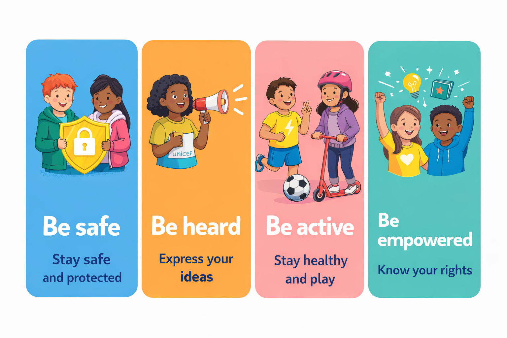
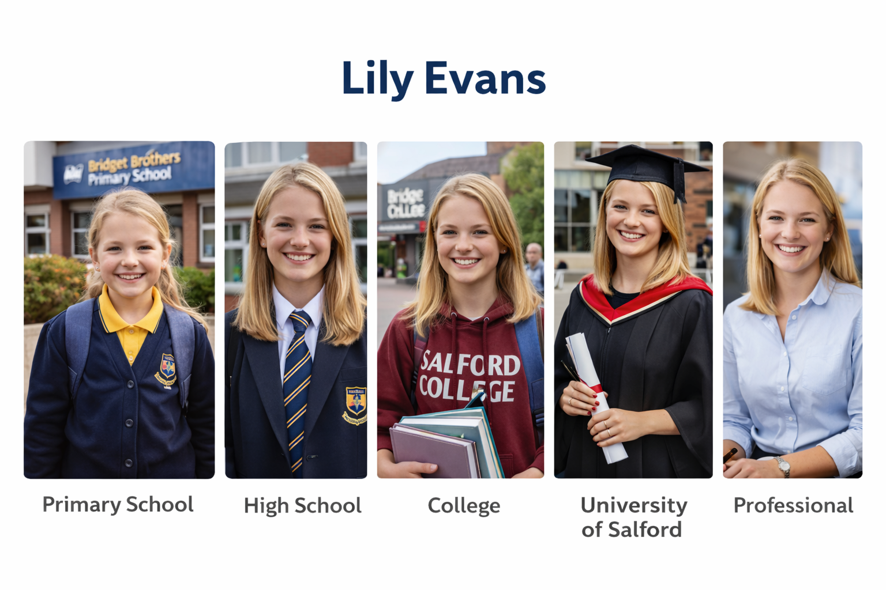

About Child Friendly Salford
Child Friendly Salford is part of UNICEF UK’s Child Friendly Cities and Communities programme, which supports councils and partners to put children’s rights into practice locally. The programme helps ensure that children and young people are listened to, supported and valued in the places where they live, learn and grow.

In Salford, this means working with children, young people, families, organisations and partners across the city to build a shared approach based on children’s rights. This website provides a central place to learn about the programme, follow progress and find ways to get involved as the work develops.
